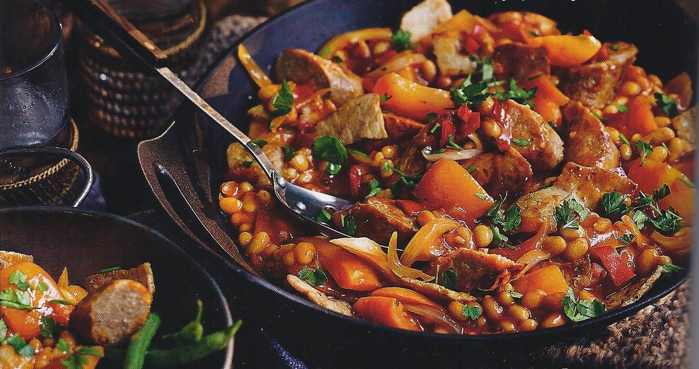

Enjoy this easy stew made with gammon and plenty of vegetables and full of goodness, delivering four of your five-a-day, and can also be cooked in a slow cooker. This recipe was taken from bbcgoodfood.com.
- 600g gammon
- 1 tbsp vegetable oil
- 2 onions, roughly chopped
- 2 carrots, chopped
- 1 celery stick, chopped
- 2 peppers, deseeded and chopped
- 3 garlic cloves, crushed
- 1 tbsp tomato purée
- 2 tsp smoked paprika
- ½ tsp chilli powder (optional)
- 2 x 400g cans chopped tomatoes
- 1 tbsp Worcestershire sauce
- 2 bay leaves
- 2 x 400g cans haricot beans, drained and rinsed
- Remove the rind and fat from the gammon, then soak in a pan of water in the fridge overnight, which will remove some of the salt.
- Heat the oil in a large flameproof casserole or ovenproof pan over a medium-high heat and cook the onion, carrots and celery for 10 mins, stirring regularly until the veg starts to soften. Stir in the peppers, garlic, tomato purée, paprika and chilli powder. Cook for another 2 mins, then add the tomatoes and stir. Swill out the tomato cans with a little water and pour this into the casserole. Season well and stir in the Worcestershire sauce, 1 tbsp sugar and the bay leaves.
- Heat the oven to 170C/150C fan/gas 3. Put the gammon in the casserole, cover and bring to a simmer. Transfer to the oven and cook for 3 hrs until the meat is tender. Carefully lift out the casserole and return to a medium heat on the hob, then add the haricot beans. Simmer for 10 mins until the beans are heated through, then shred the ham using two forks. Serve straightaway. To store, leave to cool completely and chill in an airtight container for up to three days, or freeze for up to two months. Defrost in the fridge overnight before reheating until piping hot.
Recipe tip:
- Slow cooker method: To cook this in a slow cooker, transfer the stew to a slow cooker set to low at the end of Step 2. Cover and cook for 6-8 hrs, before turning the heat to high and adding the beans for a further 10 mins.